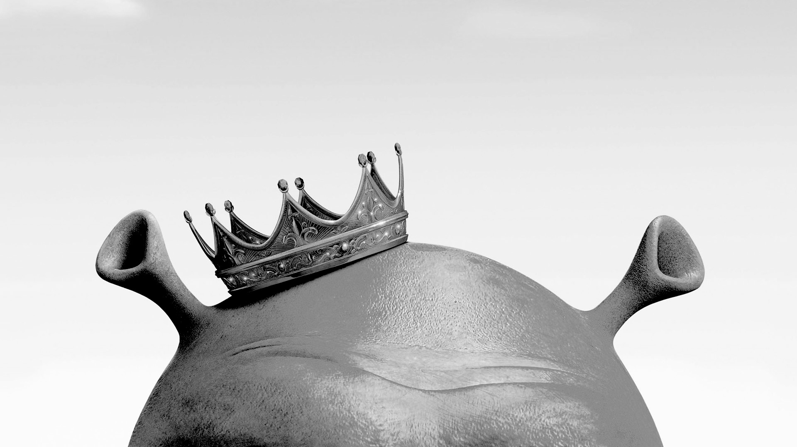

Story
With over a decade of filmmaking experience creating the cinematography and choreography for Shrek and Madagascar and other DreamWorks properties, James tells effective stories through shot construction, lens choice, staging, compositional emphasis, costume, lighting, dialog, and gesture.
Design
He designed costumes, wrote jokes, created gags, helped develop character arcs, and worked out the specific staging, set dressing and shot construction at the shot, sequence, and film level.
Pipeline
Outside of his normal duties, James created a new streamlined pipeline for 2D/3D art. The innovations saved hours of tedious set-up labor, and resulted in character and costume designs that were cheaper to create and a more accurate match with the final 3D output.
As a designer he created some of the best costumes in the Shrek world – including a “medieval Dr. Zhivago” look for Princess Fiona for the Shrek Christmas special and a “wrap-dress” out of a wedding tent for the 50ft woman in Monsters vs. Aliens.
With over a decade of filmmaking experience creating the cinematography and choreography for Shrek and Madagascar and other DreamWorks properties, James tells effective stories through shot construction, lens choice, staging, compositional emphasis, costume, lighting, dialog, and gesture.
Design
He designed costumes, wrote jokes, created gags, helped develop character arcs, and worked out the specific staging, set dressing and shot construction at the shot, sequence, and film level.
Pipeline
Outside of his normal duties, James created a new streamlined pipeline for 2D/3D art. The innovations saved hours of tedious set-up labor, and resulted in character and costume designs that were cheaper to create and a more accurate match with the final 3D output.
As a designer he created some of the best costumes in the Shrek world – including a “medieval Dr. Zhivago” look for Princess Fiona for the Shrek Christmas special and a “wrap-dress” out of a wedding tent for the 50ft woman in Monsters vs. Aliens.
ROLE
RLO, Cinematography, Choreography
Additional art, design, story boarding and punch-up
Additional art, design, story boarding and punch-up
FILMS
Madagascar: Escape 2 Africa, Rough Layout Artist
Shrek the Third, Rough Layout Artist
Shrek the Halls, Rough Layout Artist
Madagascar, Rough Layout Artist
Shrek II, Rough Layout Artist
Shrek4D, Rough Layout Artist
Shrek, Rough Layout Artist
Antz, Rough Layout Artist
The Peacemaker, Assistant Animatior FX
Matrix III, Rough Layout
Shrek the Third, Rough Layout Artist
Shrek the Halls, Rough Layout Artist
Madagascar, Rough Layout Artist
Shrek II, Rough Layout Artist
Shrek4D, Rough Layout Artist
Shrek, Rough Layout Artist
Antz, Rough Layout Artist
The Peacemaker, Assistant Animatior FX
Matrix III, Rough Layout
Additional Design Work
Shrek 4
Monsters vs. Aliens
Monsters vs. Aliens
RESULTS
Enduring stories that topped box office charts.